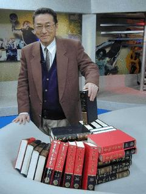

獲諾貝爾文學獎提名 李敖：比選總統容易多了
記者劉建宏 報導
新黨總統參選人李敖再爆驚奇，獲得今年諾貝爾文學獎的提名。李敖昨天接受記者專訪時表示，對他而言，獲得諾貝爾文學獎的提名，「比當選什麼鬼總統還容易一點兒！」
李敖說，他在1月24日就已經確認被推薦給諾貝爾文學獎審核小組，推薦即是提名。至於是誰推薦他，李敖說他不方便透露，但是推薦的標準就是以他所寫的1500萬字為基準。另外，有關李敖「是不是理想主義者」、「多年來為理想主義奮鬥的成果」、「基本寫作的成績」、「單一著作的水準」等等，都是獲得提名的條件之一。
其實，包括李敖在多年前所寫的第一本小說《北京法源寺》，也是包含在推薦的書籍之一。《北京法源寺》已經被翻譯成英文，由英國的牛津大學出版社出版。
李敖也不忘標榜自己，「台灣有什麼作家的作品可以拿得出去？」李敖說，他就像是冰山一樣，大家怎麼去看冰山，都只能看到浮在海面上的1∕8，但是在海面下的7∕8則是看不到的。「這就好比是台灣民眾都知道李敖很偉大，但是卻不知道我李敖究竟有多偉大！」
如果沒有得到諾貝爾文學獎，李敖會不會覺得遺憾？李敖倒是看得開，說話也謙虛多了。他說，去年的諾貝爾文學獎得主，一共被提名了27次之後才得獎，他只是第1次而已，得不得獎並不重要。
不過，李敖最後又加了一句話：「對我而言，獲得諾貝爾文學獎的提名，其實是要比我當選什麼鬼總統要來得容易多了！」
李敖無奈地表示，這個島上的人都不及格，如果不跟他們在一起，就不被承認，所以，他也只好陪大家玩一玩。但是，對他而言，他可是受到相當大的「委屈」！
14年前的李敖
國外媒體大幅報導 台灣怕他怕得要死
提到獲得諾貝爾文學獎的提名，李敖最大的感觸就是，14年前，即使連紐約時報都已經刊登了他的訪問和照片，台灣所有的媒體還是不敢提到「李敖」兩個字。另外，新聞局所出版的《中華民國作家作品名錄》一書，厚達900頁，登錄了703位作家的介紹，可是卻沒有他李敖。李敖反諷說，諾貝爾文學獎實在是太沒有眼光了，竟然會提名在台灣排名第703名以後的李敖！(2000/02/02勁報)
